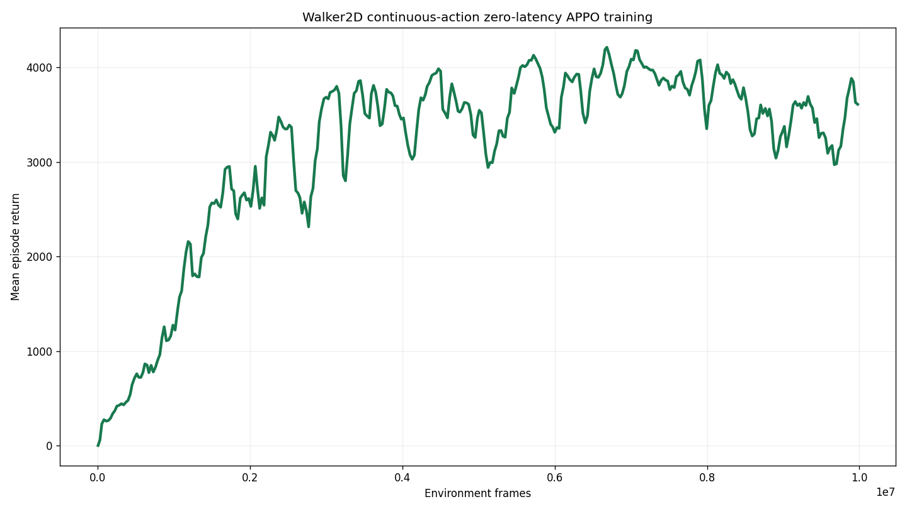
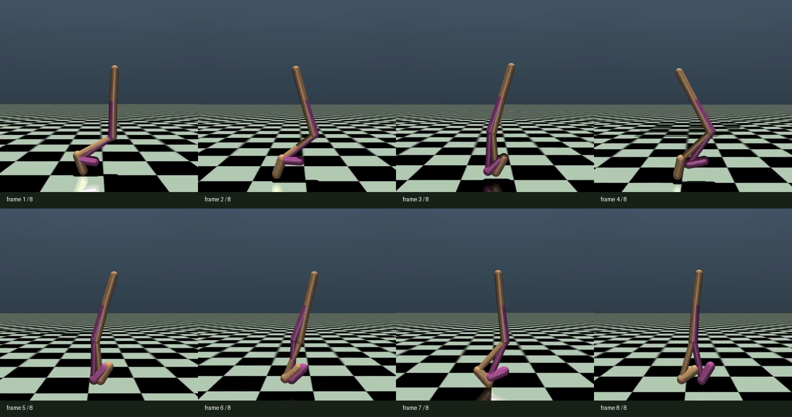

Native Box(6)
The wrapper clips and passes six float32 torques directly to Walker2D.
latency-sensitive-bench / verified release example
Walker2D keeps its native six continuous torques end to end: Gaussian APPO training, teacher export, OpenVLA regression, and online decoding all use the same six-dimensional order.
01 · Outcome
The wrapper clips and passes six float32 torques directly to Walker2D.
The vendored Sample Factory MuJoCo recipe completed 10,006,528 frames and produced best and latest checkpoints.
The best checkpoint completed ten deterministic closed-loop episodes at each of L0 through L4.
RGB+state fine-tuning and L0/L2 evaluation use a scratch six-dimensional action head; the resulting policy still underperforms the small model.
02 · Action-space design
Box(-1,1,(6,),float32).03 · Immutable task contract
env:
task_name: walker2d_continuous_torque
env_id: LatencyBench/Walker2dContinuous-v0
action_space:
type: box
labels: [right_thigh, right_leg, right_foot,
left_thigh, left_leg, left_foot]
low: [-1, -1, -1, -1, -1, -1]
high: [ 1, 1, 1, 1, 1, 1]
noop_action: [0, 0, 0, 0, 0, 0]
latency: {method: zero}04 · Contract propagation
Native Box(6) creates a 12-parameter continuous policy head.
Six-value vectors are cloned, delayed, held, and applied directly.
Canonical rows store the actual six torque values.
Conversion and decoding preserve all six dimensions unchanged.
gymnasium_walker2d.pyContinuous task wrapper.
training/gymnasium_sfBox-aware APPO and latency path.
sf_teacher_config.pyContinuous rollout contract.
starvla_lerobot.pyNative six-value StarVLA handoff.
05 · RL verification

MUJOCO_GL=egl python -m training.train \
--config configs/examples/gymnasium/walker2d/small_model_train_sf_official_10m.yamlBest checkpoint: /mnt/checkpoints/latency-sensitive-bench/small_models/walker2d/gymnasium_walker2d_continuous_zero_latency_sf_official_10m/checkpoint_p0/best_000013056_6684672_reward_4212.219.pth.
06 · Closed-loop evaluation
| Latency | ms | Mean return | Std return | Mean length |
|---|---|---|---|---|
| L0 | 0 | 3743.507 | 996.072 | 888.1 |
| L1 | 8 | 93.727 | 6.332 | 70.9 |
| L2 | 16 | 115.681 | 5.698 | 76.0 |
| L3 | 24 | -3.812 | 0.424 | 22.6 |
| L4 | 32 | -7.902 | 0.172 | 18.0 |


07 · Evidence ledger
14 focused Walker2D tests passed; prior StarVLA contract tests remain unchanged.
08 · Limits and next stage
See the normative guide and examples index.